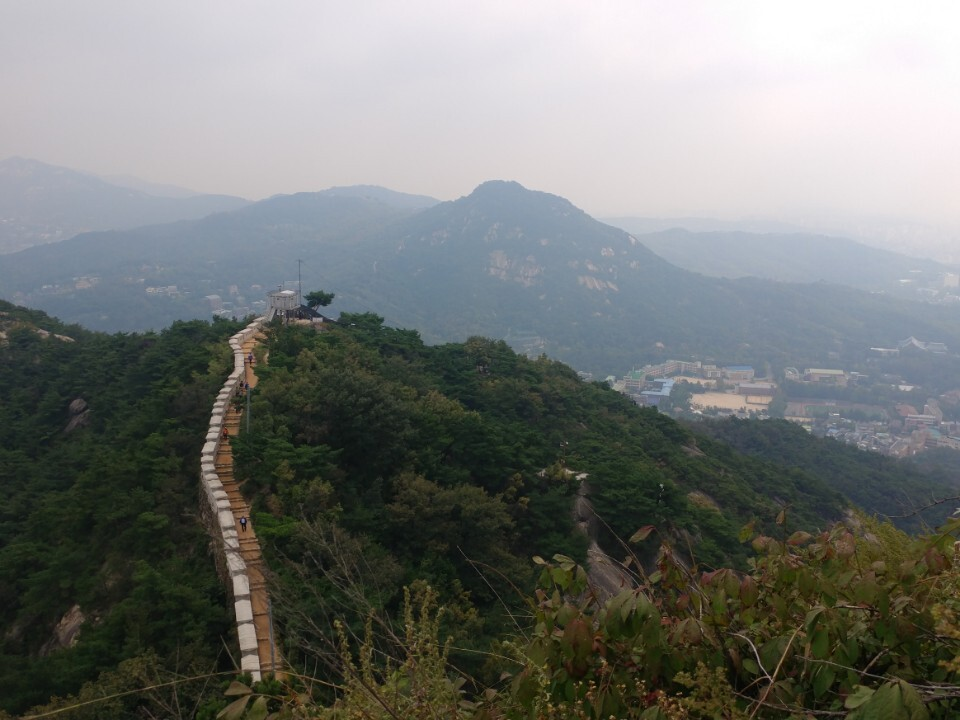

 국가는 대외무역을 육성하며, 이를 규제·조정할 수 있다. 국방상 또는 국민경제상 긴절한 필요로 인하여 법률이 정하는 경우를 제외하고는, 사영기업을 국유 또는 공유로 이전하거나 그 경영을 통제 또는 관리할 수 없다. 국가는 여자의 복지와 권익의 향상을 위하여 노력하여야 한다. 감사원의 조직·직무범위·감사위원의 자격·감사대상공무원의 범위 기타 필요한 사항은 법률로 정한다. 국회의원이 회기전에 체포 또는 구금된 때에는 현행범인이 아닌 한 국회의 요구가 있으면 회기중 석방된다. 국가원로자문회의의 의장은 직전대통령이 된다. 다만, 직전대통령이 없을 때에는 대통령이 지명한다. 국회의원과 정부는 법률안을 제출할 수 있다.
국군은 국가의 안전보장과 국토방위의 신성한 의무를 수행함을 사명으로 하며, 그 정치적 중립성은 준수된다. 법관은 헌법과 법률에 의하여 그 양심에 따라 독립하여 심판한다. 국무위원은 국무총리의 제청으로 대통령이 임명한다. 군인은 현역을 면한 후가 아니면 국무총리로 임명될 수 없다. 대통령의 선거에 관한 사항은 법률로 정한다. 군사재판을 관할하기 위하여 특별법원으로서 군사법원을 둘 수 있다. 국회는 국민의 보통·평등·직접·비밀선거에 의하여 선출된 국회의원으로 구성한다. 정당은 법률이 정하는 바에 의하여 국가의 보호를 받으며, 국가는 법률이 정하는 바에 의하여 정당운영에 필요한 자금을 보조할 수 있다.